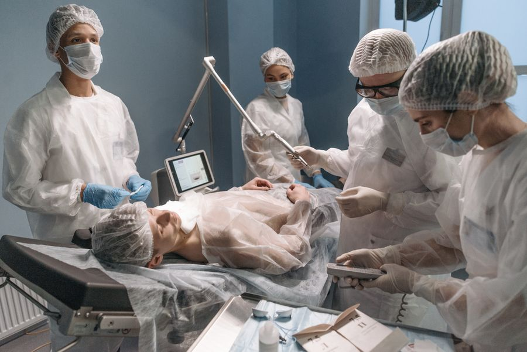
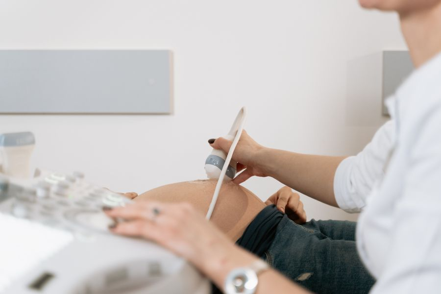
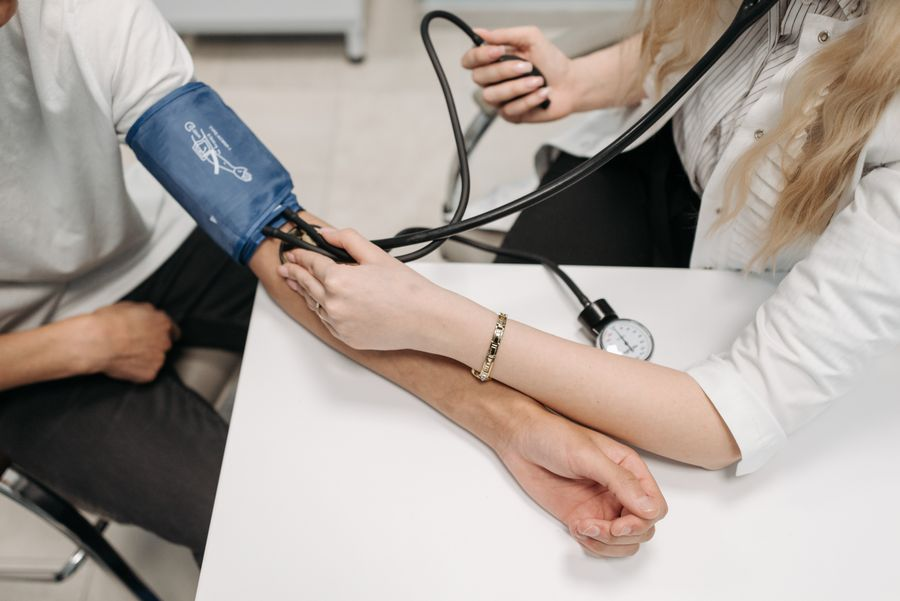
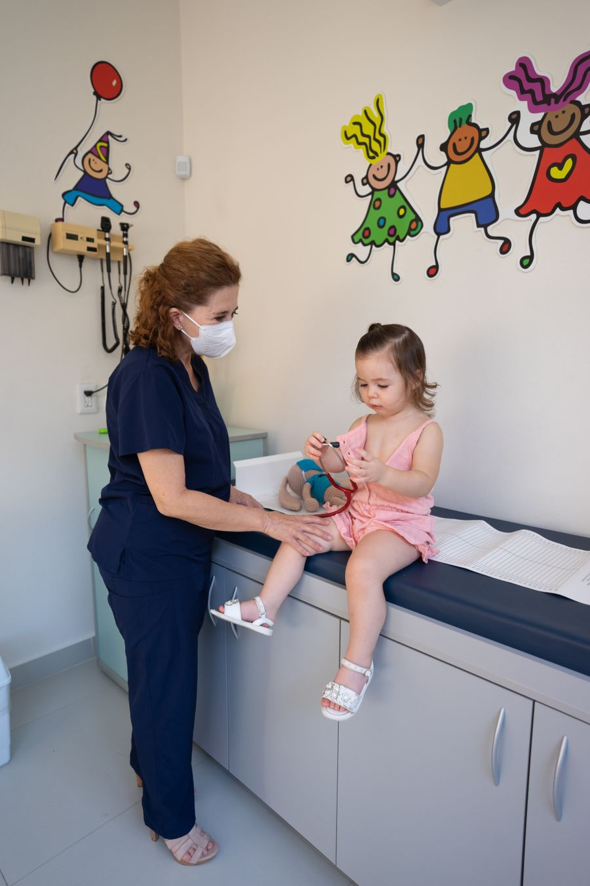
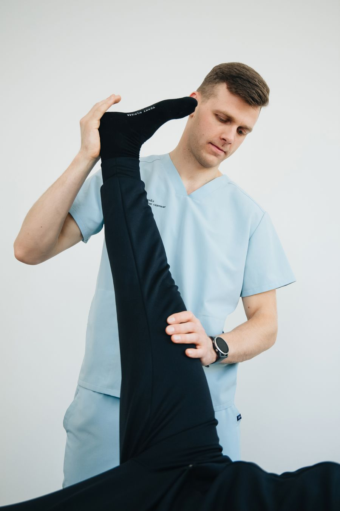

Una evaluacion integral para prevenir enfermedades, atender molestias frecuentes y cuidar la salud de toda la familia. Medicina General Ver especialidad
 Valoracion de enfermedades que pueden requerir una operacion y seguimiento antes y despues de una intervencion. Cirugia General y Laparoscopia Ver especialidad
Cuidado de huesos, musculos y articulaciones para tratar lesiones y recuperar el movimiento. Ortopedia y Traumatologia Ver especialidad
 Atencion de la salud femenina y acompanamiento durante el embarazo y las distintas etapas de la vida. Ginecologia y Obstetricia Ver especialidad
Evaluacion de sintomas relacionados con el cerebro y el sistema nervioso, como cambios de memoria, sueno o sensibilidad. Neurociencia Ver especialidad
 Atencion integral de personas adultas y seguimiento de enfermedades cronicas, como diabetes o presion alta. Medicina Interna Ver especialidad
 Cuidado de la salud, el crecimiento y el desarrollo de ninas y ninos, con orientacion para sus familias. Pediatria Ver especialidad
 Rehabilitacion con movimiento y ejercicios para aliviar molestias y recuperar fuerza, equilibrio y movilidad. Fisioterapia y Kinesiologia Ver especialidad